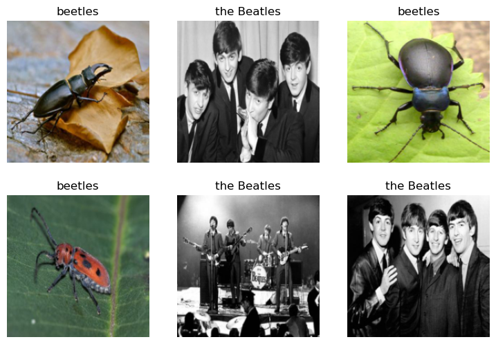
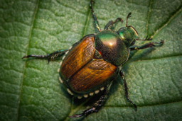

from duckduckgo_search import ddg_images
from fastcore.all import *
def search_images(term, max_images=30):
print(f"Searching for '{term}'")
return L(ddg_images(term, max_results=max_images)).itemgot('image')::: {#cell-0 .cell _kg_hide-input=‘false’ _kg_hide-output=‘false’ execution=‘{“iopub.execute_input”:“2023-03-09T12:56:53.917785Z”,“iopub.status.busy”:“2023-03-09T12:56:53.916489Z”,“iopub.status.idle”:“2023-03-09T12:57:07.982541Z”,“shell.execute_reply”:“2023-03-09T12:57:07.981391Z”,“shell.execute_reply.started”:“2023-03-09T12:56:53.917689Z”}’ execution_count=1}
#NB: Kaggle requires phone verification to use the internet or a GPU. If you haven't done that yet, the cell below will fail
# This code is only here to check that your internet is enabled. It doesn't do anything else.
# Here's a help thread on getting your phone number verified: https://www.kaggle.com/product-feedback/135367
import socket,warnings
try:
socket.setdefaulttimeout(1)
socket.socket(socket.AF_INET, socket.SOCK_STREAM).connect(('1.1.1.1', 53))
except socket.error as ex: raise Exception("STOP: No internet. Click '>|' in top right and set 'Internet' switch to on")
# It's a good idea to ensure you're running the latest version of any libraries you need.
# `!pip install -Uqq <libraries>` upgrades to the latest version of <libraries>
# NB: You can safely ignore any warnings or errors pip spits out about running as root or incompatibilities
import os
iskaggle = os.environ.get('KAGGLE_KERNEL_RUN_TYPE', '')
if iskaggle:
!pip install -Uqq fastai duckduckgo_search/bin/bash: /opt/conda/lib/libtinfo.so.6: no version information available (required by /bin/bash):::
In this short notebook, I build a classifier to determine whether an image is a beetle or The Beatles!
Step 1: Download images of beetles and The Beatles
Using the python package ddg_search we begin by searching for images of beetles and The Beatles.
from fastdownload import download_url
from fastai.vision.all import *
download_url(search_images('beetles', max_images=1)[0], 'beetle.jpg', show_progress=False)
#Image.open('beetle.jpg').to_thumb(256,256)Searching for 'beetles'Path('beetle.jpg')download_url(search_images('the Beatles', max_images=1)[0], 'the_beatles.jpg', show_progress=False)
#Image.open('the_beatles.jpg').to_thumb(256,256)Searching for 'the Beatles'Path('the_beatles.jpg')We now save searches for beetles and The Beetles into folders.
searches = 'beetles','the Beatles'
path = Path('beetle_or_the_Beatles')
from time import sleep
for o in searches:
dest = (path/o)
dest.mkdir(exist_ok=True, parents=True)
download_images(dest, urls=search_images(f'{o}'))
sleep(10) # Pause between searches to avoid over-loading server
resize_images(path/o, max_size=400, dest=path/o)Searching for 'beetles'
Searching for 'the Beatles'Step 2: Train a model
We remove photos which didn’t download correctly.
failed = verify_images(get_image_files(path))
failed.map(Path.unlink)
len(failed)2We use a ‘Datablock’ to separate the data into training and validation sets.
dls = DataBlock(
blocks=(ImageBlock, CategoryBlock),
get_items=get_image_files,
splitter=RandomSplitter(valid_pct=0.2, seed=42),
get_y=parent_label,
item_tfms=[Resize(192, method='squish')]
).dataloaders(path, bs=32)
dls.show_batch(max_n=6)
We now use ‘resnet18’ to train our model, and the ‘fine_tune()’ method from ‘fastai’ to tune the model.
learn = vision_learner(dls, resnet18, metrics=error_rate)
learn.fine_tune(3)/opt/conda/lib/python3.7/site-packages/torchvision/models/_utils.py:209: UserWarning: The parameter 'pretrained' is deprecated since 0.13 and will be removed in 0.15, please use 'weights' instead.
f"The parameter '{pretrained_param}' is deprecated since 0.13 and will be removed in 0.15, "
/opt/conda/lib/python3.7/site-packages/torchvision/models/_utils.py:223: UserWarning: Arguments other than a weight enum or `None` for 'weights' are deprecated since 0.13 and will be removed in 0.15. The current behavior is equivalent to passing `weights=ResNet18_Weights.IMAGENET1K_V1`. You can also use `weights=ResNet18_Weights.DEFAULT` to get the most up-to-date weights.
warnings.warn(msg)
Downloading: "https://download.pytorch.org/models/resnet18-f37072fd.pth" to /root/.cache/torch/hub/checkpoints/resnet18-f37072fd.pth| epoch | train_loss | valid_loss | error_rate | time |
|---|---|---|---|---|
| 0 | 1.623580 | 4.855602 | 0.545455 | 00:03 |
| epoch | train_loss | valid_loss | error_rate | time |
|---|---|---|---|---|
| 0 | 0.892229 | 3.018108 | 0.545455 | 00:04 |
| 1 | 0.693663 | 0.710887 | 0.272727 | 00:04 |
| 2 | 0.487951 | 0.266973 | 0.090909 | 00:04 |
Step 3: Test the model
We can now test our model on the images of a beetle and of the Beatles we downloaded in Step 1.
Image.open('beetle.jpg').to_thumb(256,256)
is_beetle,_,probs = learn.predict('beetle.jpg')
print(f"This is a: {is_beetle}.")
print(f"Probability it's a beetle: {probs[0]:.4f}")This is a: beetles.
Probability it's a beetle: 1.0000Image.open('the_beatles.jpg').to_thumb(256,256)is_the_beatles,_,probs = learn.predict('the_beatles.jpg')
print(f"This is a: {is_the_beatles}.")
print(f"Probability it's the Beatles: {probs[1]:.4f}")This is a: the Beatles.
Probability it's the Beatles: 0.9777